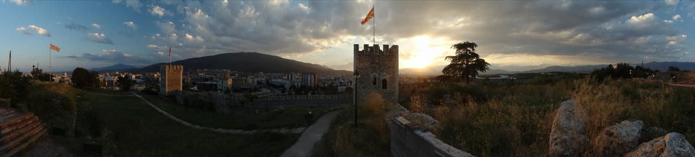

Parte 1
Pianificare
Cosa vedere davvero in tre giorni, cosa si mangia, quanto costa e cosa va prenotato prima di partire.
PianificareParte 1
6
Benvenuti
Una città che non somiglia a nessun'altra
Skopje è due città separate da un fiume e da cinque secoli. A sud del Vardar, marmo bianco, colonne e statue colossali costruite dopo il 2010. A nord, oltre il Ponte di Pietra, un bazar ottomano di vicoli, moschee e caravanserragli rimasto quasi intatto.
Si attraversa da una parte all'altra in quattro minuti. È questo il motivo per cui vale il viaggio: in nessun altro posto d'Europa due idee di città così diverse si toccano a quella distanza.
C'è una terza Skopje che non si vede e spiega le altre due: quella cancellata dal terremoto del 26 luglio 1963, che in venti secondi rase al suolo gran parte del centro. Quello che si cammina oggi è ricostruzione: prima modernista e cecoslovacca negli anni Sessanta, poi neoclassica negli anni Dieci. La storia completa è a p. 74.
Il resto è una capitale piccola, poco turistica e molto economica, dove si mangia bene per tre euro e si beve il caffè turco seduti in un cortile del Quattrocento.
Quanto dura davvero il nostro viaggio
Si atterra venerdì alle 19:45 e si riparte lunedì alle 16:50: due notti piene e tre mezze giornate. Più il fatto che a dicembre il sole tramonta alle 16:05. In pratica abbiamo due giornate di luce, sabato e domenica, più due code. Tutto questo libro è costruito su quel vincolo.
PianificareParte 1
7
Le esperienze top
Dieci cose da fare a Skopje
- 1Il caffè turco nel Vecchio Bazar, seduti in un cortile che era un albergo per carovane.
- 2Il tramonto dalla Croce del Millennio, a 1.066 metri, con la funivia che sale in sette minuti.
- 3Il canyon di Matka in barca, fino alla grotta di Vrelo.
- 4Le mura del Kale al mattino, con tutta la città vecchia sotto.
- 5Attraversare il Ponte di Pietra, che regge da sei secoli, e cambiare mondo a metà strada.
- 6Le statue di Skopje 2014 di notte, quando l'illuminazione le rende quasi credibili.
- 7Dieci ќebapi da Destan, che li fa dal 1913 e non fa altro.
- 8Un tegame di tavče gravče servito bollente, il piatto nazionale.
- 9La moschea di Mustafa Pasha, del 1492, e il giardino da cui si vede mezza città.
- 10La casa di Madre Teresa, nata qui nel 1910 quando la città era ottomana.
Se doveste sceglierne tre
Il bazar, il Vodno al tramonto e Matka. Sono le tre cose che a Skopje si fanno meglio che altrove, e le tre che d'inverno rendono di più: il bazar perché è vuoto, il Vodno perché il buio arriva presto e il tramonto è alle quattro, Matka perché senza turisti il canyon è solo acqua verde e roccia.
PianificareParte 1
8
Le esperienze top
Il bazar, la croce, il canyon
1
Caffè turco nel Vecchio Bazar
8 minuti dalla piazza · gratis entrarci · 60-80 MKD il caffè
Il più grande bazar ottomano dei Balcani dopo Istanbul: una collina di vicoli con moschee, hammam e an, i cortili porticati dove dormivano i mercanti. Si beve il caffè nella sabbia, macinato finissimo, con un bicchiere d'acqua accanto. Le botteghe aprono verso le nove e chiudono alle sei o sette, ma la domenica è quasi tutto chiuso.
2
Il tramonto dalla Croce del Millennio 100 MKD
Bus 25 + funivia · nov-mar 10:00-17:00, ultima salita 16:45 · chiusa il lunedì
Una croce d'acciaio di 66 metri in cima al monte Vodno, a 1.066 metri. La funivia parte da Sredno Vodno e impiega sette minuti. A dicembre il sole va giù alle 16:05: salire verso le 15 vuol dire vedere la città passare dal giorno alla notte, e scendere con l'ultima corsa.
3
Il canyon di Matka in barca ~400 MKD
30-40 min in van · barca e grotta ~2 ore · partenze da confermare in dicembre
Quindici chilometri a ovest, un lago artificiale stretto fra pareti verticali, un monastero del Trecento sul sentiero e la grotta di Vrelo, fra le più profonde conosciute. D'inverno è verde scuro e deserto. Dettagli a p. 65.
PianificareParte 1
9
Le esperienze top
Le mura, il ponte, le statue, i ќebapi
4
Le mura del Kale gratis
10 minuti dalla piazza · tutti i giorni 07:00-18:00
La fortezza sta sulla collina sopra il bazar. Si cammina sui bastioni con il Vardar da una parte e i tetti della città vecchia dall'altra. Ingresso libero, nessuna coda, mai.
5
Il Ponte di Pietra
4 minuti dalla piazza · sempre aperto · gratis
Dodici arcate di pietra sul Vardar, costruite fra il 1451 e il 1469 per volontà di Mehmed II. Sopravvissuto al terremoto. Collega letteralmente la Skopje di marmo a quella di mattoni: entrando da un lato si esce in un altro secolo.
6
Le statue di Skopje 2014, di notte
In piazza · gratis · meglio dopo le 18
Più di 136 fra edifici, statue e fontane costruiti fra il 2010 e il 2014. Di giorno dividono; di notte, illuminati, funzionano. La storia e le cifre contestate sono a p. 37.
7
Dieci ќebapi da Destan ~300 MKD
Kazandžiska 4, Vecchio Bazar · dal 1913 · solo contanti
Una sala, un menù di tre righe, polpettine di carne alla griglia con cipolla cruda e pane caldo. Si ordina a cinque o a dieci. In sei si mangia e si beve con meno di quindici euro in tutto.
PianificareParte 1
10
Le esperienze top
Il tegame, la moschea, la casa
Tavče gravče: fagioli, paprika e peperone secco, cotti e serviti nello stesso tegame di coccio.
8
Tavče gravče ~250 MKD
Il piatto nazionale, e per una volta il titolo è meritato: fagioli bianchi cotti al forno con paprika e peperone secco, serviti nel tegame che arriva in tavola ancora bollente. È vegetariano, costa niente e a dicembre scalda davvero.
9
La moschea di Mustafa Pasha gratis
Sopra il bazar, sulla salita al Kale · offerta libera · fuori dagli orari di preghiera
Del 1492, con un giardino e una fontana. È la moschea più importante della città e una delle poche cose rimaste in piedi dopo il terremoto.
10
La casa memoriale di Madre Teresa gratis
5 minuti dalla piazza · mar-dom 10:00-18:00, chiusa il lunedì · i gruppi prenotano
Anjezë Gonxhe Bojaxhiu nacque qui nel 1910, da famiglia albanese, in una città che allora era ottomana. Il museo sorge dove c'era la chiesa del suo battesimo. Ingresso e visita guidata gratuiti: siamo sei, va prenotato.
PianificareParte 1
11
Dicembre
Nove ore di luce, e come si usano
Il sole sorge alle 6:45 e tramonta alle 16:05. È il fatto che decide tutto il programma: non le code, non gli orari dei musei.
La regola è semplice: tutto quello che è panoramico o all'aperto va fatto prima delle quattro. Il Kale, il Vodno, Matka, il bazar. Dopo le quattro restano i musei aperti fino alle sei, i caffè, e una città illuminata che si gira bene a piedi.
La seconda regola è che la sera a Skopje è lunga. I ristoranti servono fino a tardi e costano poco: le cene diventano il centro della giornata, non un'appendice.
- Temperature
- Massime intorno ai 6 °C, minime fino a −3 °C. La scheda della Farnesina ricorda che l'inverno macedone può scendere a −15 °C: raro, ma possibile.
- Pioggia e neve
- Circa una probabilità su cinque in un giorno qualsiasi. Umidità media 89%: il freddo si sente più di quanto dica il termometro.
- Cosa portare
- Scarpe impermeabili con suola che tiene (i vicoli del bazar sono di pietra liscia), un capo pesante per il Vodno dove tira vento, guanti.
Il trucco
Mettete le cose al chiuso nel pomeriggio e quelle all'aperto la mattina, mai il contrario. Un museo alle 11 è un pomeriggio buttato.
PianificareParte 1
12
Dicembre
I mercatini di Natale non ci saranno
Meglio saperlo prima di partire: il 4-7 dicembre a Skopje non c'è niente di natalizio. La piazza è ancora spoglia, l'albero non c'è, il bazar natalizio non ha aperto.
Non è un caso né sfortuna: è il calendario. La Chiesa ortodossa macedone festeggia il Natale il 7 gennaio, e la festa forte dell'inverno è il Capodanno. Di conseguenza la città accende tutto a metà dicembre e resta addobbata fino a metà gennaio.
Le date del 2026 non sono un'ipotesi. Il Comune ha messo a bando l'illuminazione della piazza con l'obbligo di accenderla entro il 15 dicembre e di toglierla fra il 15 e il 25 gennaio: albero di 13 metri, un cervo luminoso di quattro, una slitta in cui entrare per le foto, per circa 73.000 euro. Il bazar natalizio su ulica Makedonija va dal 22 dicembre al 6 gennaio.
Cosa c'è al posto loro
Una città vera invece di una vetrina, e a metà prezzo. Il bazar senza code, Matka senza barche piene, i ristoranti con posto anche in sei. Chi è già stato in dicembre a Praga o a Vienna sa cosa si perde; chi vuole vedere Skopje la trova come è davvero.
E Sofia?
Il mercatino tedesco di Sofia apre a metà novembre e sarebbe aperto durante il nostro soggiorno. Ma sono quattro ore e mezza di pullman a tratta, con quattro corse al giorno: nove o dieci ore di viaggio per un pomeriggio, su tre giorni totali. Sulla carta si può; nella pratica brucia metà vacanza.
PianificareParte 1
13
Mangiare
I piatti da ordinare
Cucina balcanica e ottomana insieme: griglia, peperoni, formaggio di pecora, tegami di terracotta. Si mangia molto bene con pochissimo — un pasto completo nel bazar sta sotto i dieci euro a testa, bevande comprese.
Ќебапи · kebapi
Polpettine di carne macinata alla griglia. Si ordinano a cinque o a dieci, con cipolla cruda, pane e ajvar. Il piatto di strada per eccellenza.
Тавче гравче · tavče gravče
Fagioli al forno con paprika e peperone secco, nel tegame di coccio. Il piatto nazionale, vegetariano.
Пастрмајлија · pastrmajlija
Focaccia ovale con carne salata e uovo, cotta nel forno a legna. Viene dalla zona di Štip, a est.
Селско месо · selsko meso
"Carne di campagna": spezzatino con funghi e formaggio, servito in tegame. Piatto da sera fredda.
Ајвар · ajvar
Crema di peperoni arrostiti, si spalma su tutto. Si prepara in autunno a quintali, in famiglia: quello di casa non somiglia a quello del supermercato.
Шопска салата · šopska salata
Pomodoro, cetriolo, cipolla e una nevicata di sirenje, il formaggio bianco in salamoia.
Бурек · burek
Sfoglia con formaggio, carne o spinaci, tagliata a peso. È la colazione, con yogurt da bere o boza.
Трилеќе · trileće
Torta inzuppata in tre latti. Con i tulumbi, cilindretti fritti nello sciroppo, chiude ogni pasto.
PianificareParte 1
14
Bere
Rakija calda, Vranec e caffè nella sabbia
La greana rakija, scaldata con miele e spezie: la versione invernale, quella giusta a dicembre.
- Rakija
- Acquavite di frutta, di solito uva o prugna, spesso fatta in casa. D'inverno si beve greana, scaldata con miele: chiedetela così e cambia tutto.
- Vino
- La valle di Tikveš è la zona vinicola del Paese. Da provare il Vranec, rosso scuro e tannico, e la Temjanika, bianco aromatico. Costano una frazione di un vino italiano equivalente.
- Birra
- Skopsko, chiara, 120-150 MKD al ristorante. Alla Pivnica An del bazar ci sono anche birre artigianali locali.
- Caffè
- Turco, macinato finissimo e cotto nel bricco, con l'acqua a parte. Non si mescola e non si beve il fondo. Nei bar del centro si trova anche l'espresso, fatto bene.
- Boza
- Bevanda fermentata di miglio, densa e agrodolce, si beve col burek. Da provare una volta: piace a metà delle persone.
PianificareParte 1
15
Mangiare
Dove andare, in sei
Per un tavolo da sei nel fine settimana si prenota sempre, anche dove sembra informale. Una telefonata la mattina basta.
1
Destan €
Kazandžiska 4, Vecchio Bazar · solo ќebapi · contanti
Aperto nel 1913. Non c'è altro nel menù e non serve. Pranzo veloce, venti minuti, spesa ridicola. Orari indicati 08:00-23:00, da confermare.
2
Pivnica An €€
Dentro Kapan An, Vecchio Bazar · tel. +389 2 321 2111 · 09:00-24:00, dom dalle 12
Si mangia sotto le volte di un caravanserraglio del Quattrocento, con birre locali e piatti tradizionali. È il posto giusto per una cena di gruppo con atmosfera, a due passi da tutto.
3
Skopski Merak €€
Debarca 51, Debar Maalo · tel. +389 2 321 2215 · ven e sab fino a mezzanotte
Fuori dal centro storico, nel quartiere dei ristoranti, un quarto d'ora a piedi dalla piazza. Pastrmajlija nel forno a legna, griglia, costine, trileće. Si prenota anche dal sito.
4
Kaj Serdarot €€
Sotto la fortezza Kale · tradizionale, raccolto · orari da verificare
La riserva, per quando gli altri sono pieni: cucina macedone di casa, poco turistica. Indirizzo e orari precisi vanno confermati sul posto.
PianificareParte 1
16
Soldi
Quanto costa Skopje
È una delle capitali più economiche d'Europa, e si vede su tutto tranne che sugli alberghi del centro. Il conto si fa dividendo i denari per sessanta.
- Caffè turco
- 60-80 MKD · circa 1 €
- Birra Skopsko al ristorante
- 120-150 MKD · 2-2,40 €
- Dieci ќebapi con pane
- 250-350 MKD · 4-5,70 €
- Pasto completo in trattoria
- 500-700 MKD · 8-11,40 €
- Corsa in taxi in centro
- ~150 MKD · 2,40 €
- Bus urbano
- 40 MKD · 0,65 €
- Funivia del Vodno
- 100 MKD · 1,60 €
- Barca a Matka
- ~400 MKD · 6,50 €
La stima per noi sei, tre giorni
Transfer aeroporto andata e ritorno 70-100 € · pasti 270-360 € · Matka fra van, barca e grotta 90-100 € · funivia 10 € · bus e taxi in città 40 € · musei 0-30 €, perché i due più belli sono gratis. Totale per il gruppo: 480-640 €, oltre a volo e albergo.
PianificareParte 1
17
In sei
Cosa cambia quando si è un gruppo
Sei persone non sono due: cambiano i mezzi, i tavoli e i tempi. Tre cose vanno decise prima di partire, non sul posto.
Il mezzo
Un van da otto posti costa meno di due taxi e tiene il gruppo insieme. Vale per l'aeroporto (35-50 € a tratta contro 50 € di due taxi) e soprattutto per Matka, dove il bus 60 impiega fino a un'ora e lascia a venti minuti di cammino dal canyon, mentre il van arriva all'imbarcadero in trentacinque minuti per 50-60 € andata e ritorno, divisi per sei.
Il tavolo
Nel fine settimana i posti buoni si riempiono e un tavolo da sei non si improvvisa. Prenotate venerdì e sabato sera prima di partire; domenica e lunedì si può rischiare.
I tempi
Un gruppo di sei si muove a circa metà della velocità di due persone: le soste al bancomat, al bagno, per le foto. Nel programma di Parte 2 ogni spostamento è calcolato largo. Se ci si divide, darsi un punto e un'ora di ritrovo: in piazza ci si trova sempre.
Il trucco
La casa di Madre Teresa è gratis ma per i gruppi chiede la prenotazione. Una mail la settimana prima e la visita guidata, anche quella gratuita, è assicurata.
PianificareParte 1
18
Prima di partire
Scadenze e prenotazioni
Subito, questa settimana
- 1Documenti di tutti e sei. Le carte d'identità cartacee non valgono più dal 3 agosto 2026: serve la CIE elettronica o il passaporto, integro e con almeno tre mesi di validità oltre il 7 dicembre.
- 2Scegliere l'albergo e disdire le prenotazioni doppie finché la cancellazione è gratuita.
- 3Polizza di viaggio con rimpatrio sanitario: la tessera sanitaria europea qui non vale.
Entro fine novembre
- 4Van per l'aeroporto, andata e ritorno, con il codice del volo.
- 5Tavoli per sei per venerdì e sabato sera.
- 6Casa di Madre Teresa: prenotazione del gruppo.
- 7Bagaglio in stiva se si vuole portare a casa ajvar, miele o rakija: sono liquidi.
- 8Roaming: il "roam like at home" europeo non vale in Macedonia del Nord. Ognuno controlli il proprio operatore.
Una settimana prima
Ricontrollate: orari della funivia del Vodno, partenze delle barche a Matka in dicembre, orari domenicali dei musei, e se in piazza hanno già acceso le luci. Gli orari invernali cambiano senza preavviso.
PianificareParte 1
19
Per temi
Se ti piace…
L'architettura ottomana
Moschea di Mustafa Pasha, Kapan An e Suli An, hammam di Daut Pasha, Ponte di Pietra. Tutto nel capitolo del bazar, p. 47.
Le storie politiche
Skopje 2014, l'antichizzazione e la polemica sulle statue: p. 37. Il terremoto del 1963 e la ricostruzione: p. 74.
Camminare nella natura
Il canyon di Matka e il monte Vodno: p. 61. D'inverno servono scarpe che tengano.
Mangiare e bere
I piatti sono qui a p. 13; i locali zona per zona nei capitoli delle zone, in fondo a ciascuno.
I musei
Archeologico, Lotta Macedone, Olocausto e casa di Madre Teresa: tutti sulla riva sinistra o a due passi dalla piazza, p. 41. Tutti chiusi il lunedì.
Comprare qualcosa di vero
Rame lavorato a mano nella via dei calderai, filigrana d'argento, ajvar, peperoni secchi, tè di montagna. Nel bazar, p. 58.
Quello che a Skopje non c'è
Non c'è la metropolitana, non c'è Uber e non c'è Bolt. Non ci sono code: nessuno dei luoghi di questa guida richiede di prenotare un orario, tranne i ristoranti e la visita di gruppo da Madre Teresa. E in tre giorni non c'è tempo per Ohrid, che è a tre ore di strada.
PianificareParte 1
20
Crediti fotografici
Le foto di questo capitolo
Foto da Wikimedia Commons, pubblicate con licenze Creative Commons o in pubblico dominio. Mappe: Esri, HERE, Garmin e i contributori di OpenStreetMap. Dati stradali: OpenStreetMap.
- pi_apertura: I would appreciate being notified if you use my work outside Wikimedia.
More of my work can be found in my personal gallery., CC BY 3.0, commons.wikimedia.org/wiki/File:Skopje,_pohled_na_město_z_pevnosti_Kale_II.jpg
- b_bazar: Nikkyb, Public domain, commons.wikimedia.org/wiki/File:Skopje_OldBazaar.jpg
- pi_tavce: Наташа Величковска, CC BY-SA 4.0, commons.wikimedia.org/wiki/File:Тавче_гравче_3.jpg
- pi_ajvar: Mila Atkovska, CC BY-SA 4.0, commons.wikimedia.org/wiki/File:Традиционално_сервиран_ајвар.jpg
- pi_rakija: Tashkoskim, CC BY-SA 4.0, commons.wikimedia.org/wiki/File:Греана_ракија.jpg